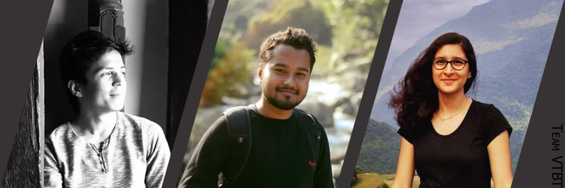

धरहरा घुम्न मिल्ने गरी Unity 3D मा निर्माण गरिएको एक डिजिटल-वातावरण
दुई शब्द
VTBT, Unity 3Dमा बनेको एउटा प्रोजेक्ट हो जसलाइ उपयोग गरेर प्रयोगकर्ता धरहरा घुम्न सक्छन। वि.स.२०७२ साल को विनाशकारी भुइचालो पश्चात डिजिटल वातावरणको माध्यमबाट धरहरा घुम्न मिल्न सक्ने बनाउने यो एक अभियान, विपत्तिमा जन्मिएको एक परिवर्तनशिल प्रोजेक्ट बन्ने अठोट बोक्दछ। VTBTको मध्यमबाट सर्जक यो जनाउन चाहन्छन कि, देशको मौलिक सम्पत्तिको संरक्षण ससंगै त्यसको डिजिटल सग्रह बनाउनपनि त्यतिकै आवश्यक छ, जुन निकट भविष्यमा कुनै अर्को माध्यम( जस्तै AR )मा पोर्ट गरेर अझै विकसित र प्रयोजनशाली बनाउन सकिन्छ; यद्धपि जुन भावि पुस्ताका लागि पनि राम्ररी सरंक्षित रहन्छ।
VTBT को निर्माण गर्दा मुख्यतह यी निम्न टेक्नोलोजिको प्रयोग गरिएको पाईन्छ:
Unity 3D - मेस र रिग बनाउन, डिजिटल वातावर्ण निर्माण गर्न
Monodevelop - C# कोड एडिटर, कोलिजन टेस्टिङ्ग, स्क्रिप्ट लेख्न
MakeHuman - रिग्गिङ्ग गरिएको मनुष्य जस्तै क्रित्रिम प्रतिरुप बनाउन
अरुपनि थुप्रै सामग्रीको प्रयोग गरिएको छ तर, सक्षिप्त जानकारी एवं आम प्रयोजनका लागि मुख्य(दिईएको जति) मात्र उल्लेख गरिएको छ।
सर्जक

VTBT, फोटोमा क्रमानुसार निम्न सोफ्टवेयर डेभेलोपर्स: नारायण पन्थी, सिद्धान्त रिमाल र, स्नेहा प्रशाई को मौलिक संरचना हो। सेमेस्टर प्रणालीमा रहेको सर्जकको ब्याचेलर्स कोर्सको दोस्रो वर्ष, चौथो सेमेस्टरमा CSC-२५४ कमप्युटर ग्राफिक्स को सेमेस्टर प्रोजेक्ट का निमित्त सेन्ट जेभियर्स कलेज, माईतिघर, काठमाण्डौ अन्तर्गत इन्जिनियर अनिल साह को निरिक्षणमा यसको निर्माण वि.स्.२०७२ मा भएको हो।
यहा भएको डाउनलोड-बटन बाट तपाँई विन्डोज-७ को लागि कम्पाइल गरिएको .exe एप्लिकेसन डाउनलोड गर्न सक्नुहुन्छ। यो एप्लिकेसन विन्डोज-७ वा त्यसपछिको सबै x64 विन्डोज संस्कारणमा उपयोग गर्न सकिन्छ। यसको प्रयोग(टेस्टिंग) निम्न वातावरणमा गरिएको छ: विन्डोज-७ ६४बिट, विन्डोज-८ ६४बिट, विन्डोज-८.१ ६४बिट, विन्डोज-१० ६४बिट। यस सन्दर्भमा एप्लिकेसन भन्नाले विभिन्न डिसप्ले रेजोल्युसनमा चल्नसक्ने, आम प्रयोजनको लागी लक्षित नगरिएको, बेटा-एप्लिकेसन लाइ जनाउदछ।
यस सफ्टवेयरसंग सलंग्न इजाजतपत्र अन्तर्गत तपाँई यसलाइ हेर्न्, फोर्क गर्न र परिमार्जन गर्न सक्षम हुनुहुन्छ। यो प्रोजेक्ट, जुन Unity 5.0.0f4 मा निर्माण गरिएको छ, प्रयोगका लागि गिटहबमा उपलब्ध छ। यस सफ्टवेयरका सर्जक यसका लागि र यस सम्बन्धित, केहि जिम्मेवारी लिने, कुनै उत्तरदायित्व लिने र/वा, कुनै पनि प्रकारको सहायता दिने पात्र रहने छैनन्, जुन Unity को पछिल्लो संस्कारण प्रयोग गर्नाको कारण कम्पोनेन्ट डेप्रिसिएसन भएर भविष्यमा हुन सक्छ। तसर्थ, यस प्रोजेक्ट Unityको पछिल्लो संस्कारणमा कसै व्यक्ति/समुह/संगठन ले पोर्ट गरेर बुझाएमा त्यो सरहनिय रहने छ। तपाँईको नयाँ संस्कारणको पोर्ट बुझाउनका लागि यो प्रोजेक्ट फोर्क गरेर आवस्यक परिमार्जन गर्नुहोस अनि पुल रिक्वेस्ट पठाउनु होला। यस विषयमा अन्योलमा पर्नु हुदैछ भने, यो पेज पढनुहोला। अनत्यमा, यस विषयमा कुनैपनि कार्य सुरु गर्नु अगाडि इजाजतपत्र तल देखि माथि पुर्णतह राम्ररी अध्ययन गर्न आग्रह गरिन्छ। यस प्रोजेक्टमा तपाँई आफ्नो संस्कारण योगदान गर्न इच्छुक हुनुहुन्छभने तपाई सर्जकसंग यस विषयमा कुरा गर्न सक्नुहुन्छ।
यो प्रोग्राम निशुल्क सफ्टवेयर हो: फ्रि सफ सफ्टवेयर फाउन्डेसन द्वारा प्रकाशित GNU Affero General Public License को उपयोग नियमावली अनुसार, यसै इजाजत पत्र को तेस्रो संस्करण अथवा अन्य कुनै (तपाईँको विचार अनुसार) त्यस पछिल्लो संस्करण को प्रयोग गरी, तपाईँ यसलाई पुनःवितरण र /अथवा परिमार्जन गर्न सक्नुहुन्छ।
यो प्रोग्राम कसैका लागि उपयोगी एवं प्रयोगशाली रहने छ भन्ने आशय को सथ यसको वितरण भएको छ, तर कुनै वारेन्टि रहित; व्यवसाहिक अथवा कुनै खास प्रयोजनका निम्ति कतै अपलक्षित वारेन्टि समेत नभएको। विस्तृत जानकारीको लागि GNU Affero General Public License को इजाजतपत्र हेर्नुहोस्।
यो सफ्टवेयर सँग तपाईँले GNU Affero General Public License को इजाजतपत्र प्राप्त गरिसकेको हुनुपर्दछ । यदि छैन भने, यो वेब-साइटमा हेर्नुस्।
अतिरिक्त समग्री प्रयोगबारे जानकारी:
यस वेब-साइटमा मा प्रयोग गरिएको सेतो धरहराको चिन्ह (लोगो), thenounproject.comमा रहेको असली संस्करण बाट लिएर परिमार्जन गरीएको हो । धरहराको चिन्ह (लोगो) र यस सम्बन्धीत सबै समाग्री जेसन डिलवर्थ को मौलिक सम्पति हो, जुन प्रयोगको लागि CC-3.0 अन्र्तगत नि:शुल्क उपलब्ध गरिएको छ।
यो वेब-साइटमा प्रयोग गरिएको धरहराको पृष्टभूमिको फोटो इन्टरनेटको सार्वजनिक संग्रहबाट “जस्ताको तेस्तै” सभार गरी आवश्यक परिमार्जन गरिएको छ । यस वेब-साइटका निर्माता(हरु)ले यस सम्बन्धमा कुनै हक दावी गरेका छैनन्।


{kind=link}